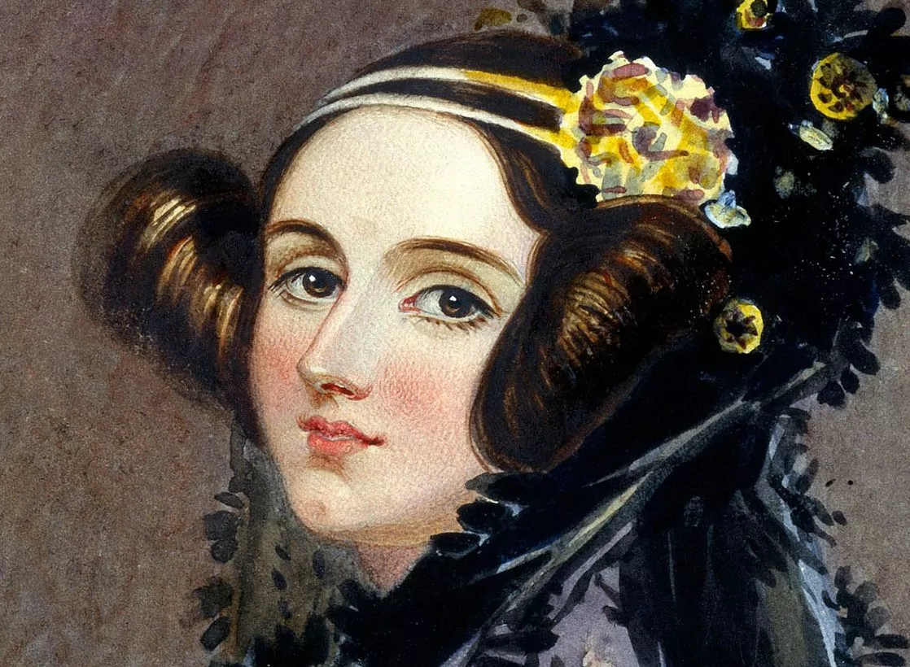

Ada King Lovelace
The female genius who paved the world as we know it
Ada Lovelace's pioneering vision paved the way for making a space for women in computer science before computer scientists even existed.

Ada Lovelace was the first "computer programer"
1980 -United States Department of Defense created computer language Ada. The reference manual for the language is MIL-STD-1815. Named after Lovelace & given the year of her birth.
1998 -British Computer Society (BCS) awards the Lovelace Medal to individuals who have contributed to the understanding/advancement of computing
2009 -Ada Lovelace Day was established with a goal to raise awareness of women in science, math, technology & engineering.
2013 -Ada Developers Academy was founded with a mission to support people becoming professional software developers
2017 -Cardano cryptocurrency platform launches using Ada as the name for the cryptocurrency & Lovelace as a sub-unit of Ada.
A Timeline of Ada Lovelace's Life
- 1815 -Born in London, England as Augusta Ada Byron
- April 1815 -Ada's father, famed poet Lord Byron, left England leaving behind his wife & 2 month old Ada. Due to this event, her mother became estranged to her causing a riff between the two.
- 1829 -Suffers from a case of measles leaving her paralyzed close to 2 years
- 1831 -Recovering from her sickness, Ada is now able to walk using crutches & despite her disability, she developes her mathmatical and technological skills. She wrote a book Flyology based on her vision of wanting to fly.
- 1832 -Privately educated in math and science by William Frend, William King & Mary Sommerville. Her interests in mathmatics emerged paving the path for her destiny.
- 1833 -Meets Charles Babbage & shared his prototype of his difference engine. Ada was engaged in learning about this machine & contiuned to visit Babbage to learn more. Babbage, moved by Ada's intellect, referred to her as "The Enchantress of Number".
- 1835 -Marries William, 8th Baron King & becomes Lady King. They have 3 children from 1836-1839.
- 1842 -Translates Italian mathmatician, Luigi Menabrea, article on the Analytical Engine. She was the first one to show interest, grasping the concept of how it worked. She explained how the original Difference Engine and the Analytical Engine differed.
- 1843 -The notes she wrote (Note A-G) were published in Scientific Memoirs lead to her being referred to "the world's first computer programer".
- 1852 -Dies at the age of 36
Impacts of Ada Lovelace's Mind
Those who have learned to walk on the threshold of the unknown worlds, by the means of what are commonly termed par excellence the exact sciences, may then, with the fair white wings of imagination, hope to soar further into the unexplored admidst which we live.
Read more about this brilliant woman who changed history, Ada Lovelace, and moved the world towards the life we know today.
Ada Lovelace's Wikipedia Entry also shares details about her story.